An imperial brief
Commissioned in 1671 as the empire's ceremonial mosque, it was supervised by Fida'i Khan Koka, Aurangzeb's foster brother and Governor of Lahore — and cost roughly 600,000 rupees, a fortune that funded a fortress of worship.
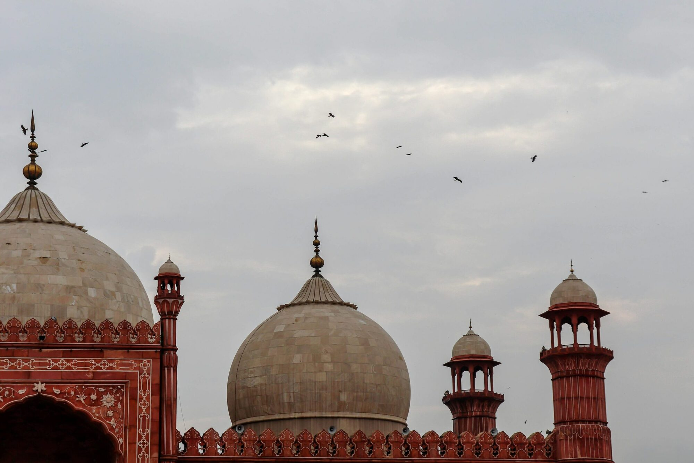
Raised in 1673 by Emperor Aurangzeb Alamgir, this is the largest mosque the Mughal Empire ever built — and for 313 years, the largest on earth.
Aurangzeb built it to announce an empire at its zenith. The red sandstone came from Rajasthan, the marble from the workshops of the empire, and the courtyard alone was laid to hold a hundred thousand men at prayer. It was finished in just two years — and for the next three centuries, nothing on earth was larger.
Commissioned in 1671 as the empire's ceremonial mosque, it was supervised by Fida'i Khan Koka, Aurangzeb's foster brother and Governor of Lahore — and cost roughly 600,000 rupees, a fortune that funded a fortress of worship.
Its raised platform, thick walls and lime mortar were engineering answers to the Ravi river that once ran close by. Deliberate symmetry, a single ablution fountain, and a plan that reads as one movement from gate to prayer hall.
It was the final great mosque of the empire — after Wazir Khan's tilework, after Shah Jahan's Jama Masjid. Everything after it would be lighter, more delicate, more Persian. This is where the Mughal chapter closes.
Aurangzeb orders the mosque to be raised directly opposite Lahore Fort, so the two read as a single royal complex — devotion on one side, governance on the other. Work begins under Fida'i Khan Koka.
Red sandstone, white marble inlay, four octagonal minarets of 176 feet and three marble domes. At 270,000 square feet, it is the largest mosque on earth and the most expensive ever built in the subcontinent.
After Ranjit Singh's campaigns the complex is stripped and used as a stable and an armoury. Domes and finials are taken down; the courtyard becomes a parade ground.
Public pressure ends its use as a British garrison. The Badshahi Mosque Authority is constituted to restore the building, and the great restoration campaigns of the 20th century begin.
The All-India Muslim League meets in the mosque's courtyard and passes the resolution that demands an independent state for the Muslims of India — the demand that will become Pakistan seven years later.
On 14 August 1947, Pakistan's independence is announced from the minaret of the Badshahi Mosque. The voice that carries it across Hazuri Bagh is the same voice the builders designed the tower to carry.
With the completion of the Faisal Mosque in Islamabad, its 313-year reign as the world's largest mosque ends. It remains, by most counts, Pakistan's largest — and the last truly imperial one.
Not a museum but a place of worship: five daily prayers, a Qur'an school, and a courtyard that fills and empties across the day. The 1840s restoration of the marble inlay and frescoes continues to this day.
Badshahi rejects decoration for its own sake. Every arch, dome and finial is placed to a rule: the building should feel inevitable, as though it had always been the shape of the sky. Ornament arrives only after the geometry is already true.
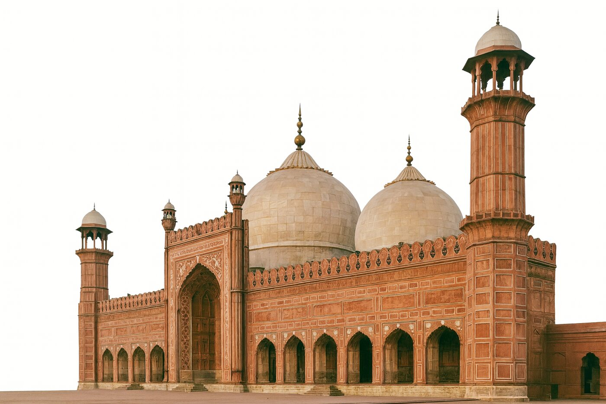
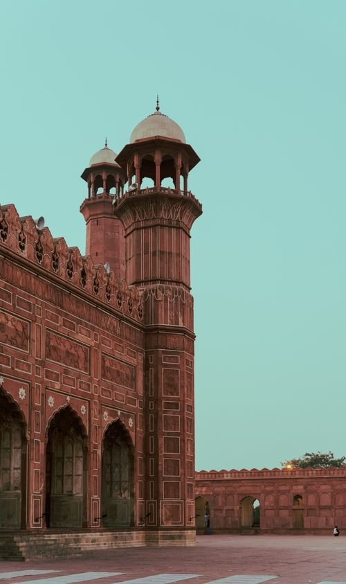
Octagonal, fluted, and divided into three storeys by projecting balconies, each tower finished with an eight-sided marble pavilion.
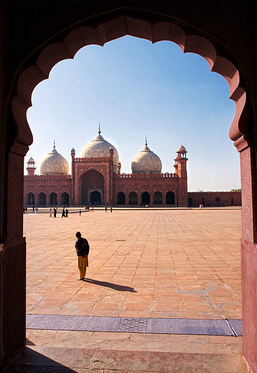
The scalloped, multi-lobed arch — Mughal at its most confident — borrowed from Central Asian and Persian building and perfected here.
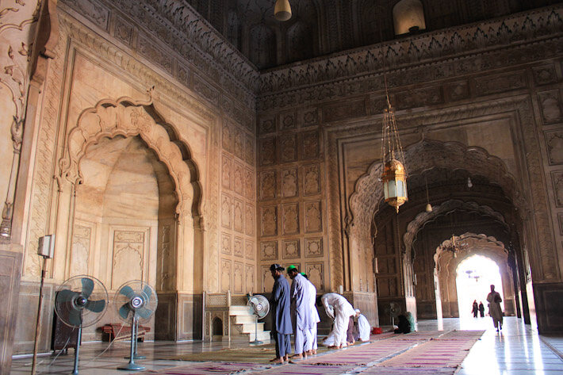
Carved plaster covers every wall and ceiling; marble inlay runs in floral and geometric bands around the mihrab.
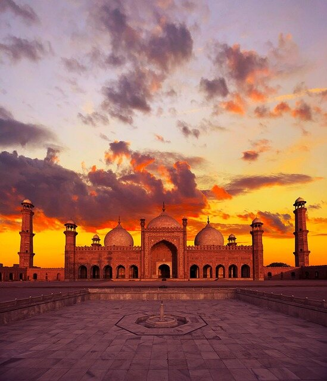
“It was the largest mosque in the world for 313 years. Nothing built after it in the Mughal world is meant to make you feel small in the same way.”
The last imperial mosque · Lahore, 1673
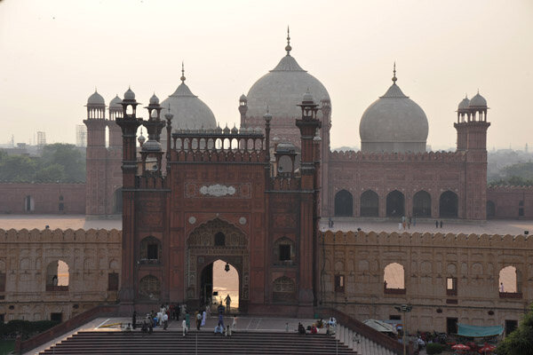
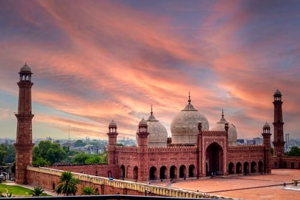
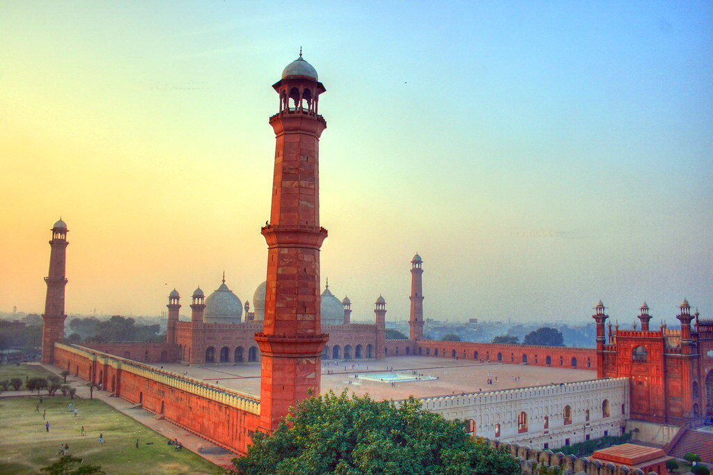
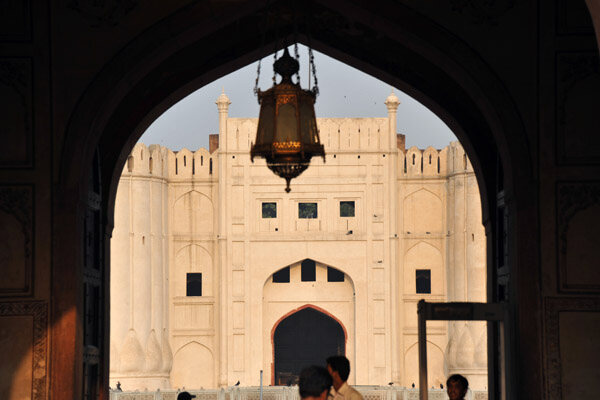
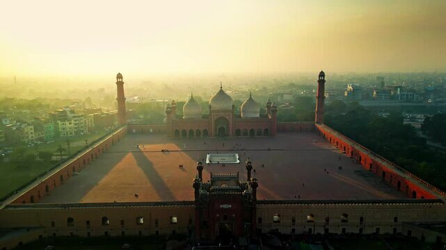
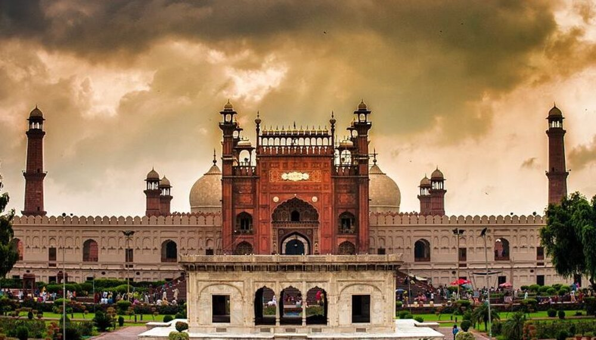
Daily from 8:00 AM to approximately 8:00 PM (closing for Isha prayer). Tourists are asked to step aside during prayers, and Fridays are busiest.
Free — no ticket, no booking, no barrier. Donations are welcome for upkeep. Shoe storage at the gate is around PKR 20.
Sunrise and the hour before sunset. Winter (November–February) gives the clearest skies and the calmest courtyards.
Modest dress is expected. Shoes are removed at the entrance — bring socks, and a bag if you would rather not pay for storage.
Welcome in the courtyard and the outer arcades. Ask before photographing worshippers, and keep phones away during prayers.
Ablution areas, shaded arcades for rest, restrooms, a Qur'an school, shoe storage and attendants at the main gate.
One to two hours is right for the courtyards, the prayer hall and the fort-facing terrace. Add another hour if you are going through to Hazuri Bagh and the Lahore Fort.
Yes. The Badshahi Mosque is open to all visitors. The inner prayer hall closes to sightseers during congregational prayers, so time your walk around them.
It is a five-minute walk across Hazuri Bagh, through the Naulakha Pavilion. The mosque's main gate faces the fort's Alamgiri Gate across the garden.
Very. The courtyard is wide, flat and shaded, the gardens around Hazuri Bagh are calm, and the site is free of charge to wander. Dress children modestly and keep them close during prayer times.
Lahore Fort and the Naulakha Pavilion, the Old City food street, Minar-e-Pakistan, Wazir Khan Mosque, Data Darbar and Delhi Gate — all within the old walled city.
On the western edge of Hazuri Bagh, a hundred metres from the Alamgiri Gate of Lahore Fort — inside the UNESCO-listed historic core of the old city.
UNESCO World Heritage Site. The Sheesh Mahal and the Diwan-i-Aam are five minutes across the garden.
02The garden of a thousand treasures, with the Naulakha Pavilion between mosque and fort.
03The tower built on the spot of the 1940 Lahore Resolution. Its top floor frames the mosque.
04The finest tiled interior in the city — and the last great builder of the Mughal mosaic tradition.